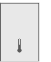
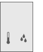
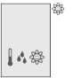

QMX3.P30, P40, P70 properties
The listed properties are displayed in the Hardware and network editor > Inspector window > Properties tab when the device with KNX PL-Link is selected in the Device view tab.
QMX3.P30 | QMX3.P40 | QMX3.P70 |
|
 |  |  |
|
General and Catalog information
The General and Catalog Information group provides information about the device.
Property | Description | Default value |
|---|---|---|
Mode | Mode shows the network mode of the device. Read only. | KNX PL-Link |
Name | Name is a text field to enter the name of the device. The name is used to identify the device in the device view. | Depends on other settings. |
Comment | Comment is a free text field to enter any helpful information on the device. | - |
Power consumption | Power consumption shows the power the device consumes. Read only. Unit: [mA] The value is used to calculate the remaining power of the KNX rail. See also power consumption and supply on KNX rail of PXC3 or KNX rail of DXR2. | Depends on the device type. |
Short designation | Short designation shows a short description of the device. Read only. | Depends on the device type. |
Order number | Order number shows the device type. Read only. | Depends on the device type. |
Version | Version shows an internal version of the device. Read only. | - |
Description | Description shows a short description of the device. Read only. | Depends on the device type. |
Device information
The Device information group provides information about the device and settings.
Property text | Description | Default value |
|---|---|---|
Device address (KNX) | Device address (KNX) shows the fixed standard address for devices with KNX PL-Link. Read only. | 255 |
Serial number used | Serial number used defines the method used for device identification.
|
|
Serial number | Serial number defines the serial number used for device identification. Serial number is only enabled and relevant if Serial number used is enabled. | 000000000000 |
RUW Device Object Configuration1) | RUW Device Object Configuration defines if the current air quality level is written to the BACnet object AQualRIndRu and if the information can be used by other devices e.g. QMX3.P36.
|
|
 : The serial number entered in the text field Serial number is used for device identification.
: The serial number entered in the text field Serial number is used for device identification. : Device identification has to be done in Web interface. The device has to be in programming mode for Web interface to perform the device identification.
: Device identification has to be done in Web interface. The device has to be in programming mode for Web interface to perform the device identification.1) Only available for QMX3.P70
Alarming
Property | Description | Default value |
|---|---|---|
Alarming |
|
|
Functions
The functions table in the Channel Overview provides an overview of the channels of the device. Depending on the device the values in the table are read only or can be edited. The available types depend on the device and the application function.
Property | Description |
|---|---|
Name | Name of the channel. Read only. |
Type | Name of the function. |
Zone | Part of the geographical address of the device. Range: 1...126 |
Room | Part of the geographical address of the device. Range: 1...63 |
Subzone | Part of the geographical address of the device. Range: 1...15 Note |
The functions are described briefly in the table below.
Type | Description | Number of channels used |
|---|---|---|
System | Device information that is mapped to the BACnet object peripheral device (PrphDev). Read only. | 1 |
RTS | Room temperature sensor | 1 |
Some of the functions can be configured. The properties of those functions are described below in order of their appearance in the drop-down list.
Room temperature sensor (RTS)
Property | Description | Default value |
|---|---|---|
Change of value, COV | Change of value, COV defines the change in the value for room temperature that triggers the sending of the value for room temperature. Range: | 0.1 |
Heartbeat | Heartbeat defines the time interval to send the value for room temperature if the value for room temperature did not change or the change was smaller than "Change of value, COV". Range: | 120 |
Minimum repetition time | Minimum repetition time defines the minimal time interval before the next value for room temperature can be sent. Range: | 10 |
 0.1...100 [K]
0.1...100 [K]Relative humidity sensor
Property | Description | Default value |
|---|---|---|
Hum rel COV condition | Hum rel COV condition defines the change in the value for relative humidity that triggers the sending of the value for relative humidity. Range: | 5 |
Hum rel heartbeat | Hum rel heartbeat defines the time interval to report the value for relative humidity if the value did not change or the change was smaller than Hum rel COV condition. Range 120…900 [s] | 900 |
Hum rel min rep time | Hum rel min rep time defines the minimal time interval before the next value for relative humidity can be sent. Range: | 10 |
Air quality sensor
Property | Description | Default value |
|---|---|---|
AQ COV condition | AQ COV condition defines the change in the value for room air quality that triggers the sending of the value for room air quality. Range: 0...1000 [ppm] | 10 |
AQ heartbeat | AQ Heartbeat defines the time interval to report the value for air quality if the value did not change or the change was smaller than the AQ COV condition. Range: 120…900 [s] | 900 |
AQ min rep time | AQ min rep time defines the minimal time interval before the next value for room air quality can be sent. Range: | 10 |
Altitude | Altitude defines the position of the device above sea level. Range: -200… 3000 [m] | 0 |